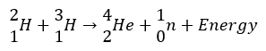
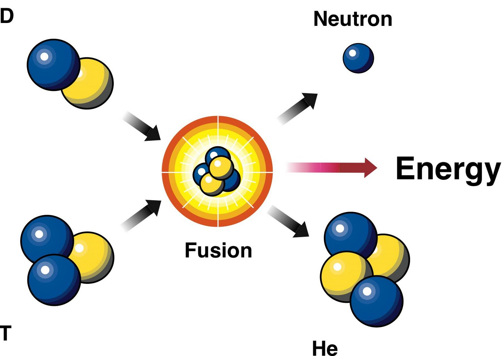
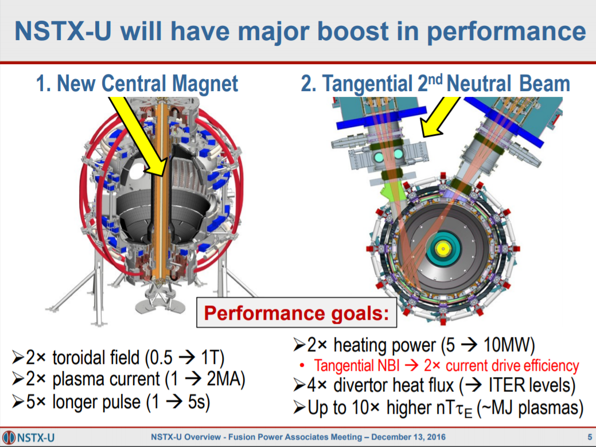
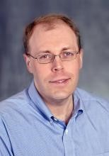

Stage 1 Physics | Science as a Human Endevour | November 2018
SHE Concepts:
Communication and Collaboration:
Development:
On the road to achieving a cheap, clean and renewable energy, scientists believe that nuclear fusion, a process that occurs naturally in the stars is the most viable answer. This is due to fact that fusion reactors produce a significantly large amount of energy (4 times more than fission), can become self-sustainable, produces no greenhouse gasses and has no possibility of a runaway reaction (like in a nuclear fission meltdown). The International Thermonuclear Experimental Reactor (ITER) is the largest reactor undergoing construction in the world, able to generate 500 megawatts of thermonuclear power every 8 minutes (enough to power 150,000 homes). It is being built for research purposes and will experiment with new theories and technologies. The completion of ITER would not be possible without the communication and collaboration with the 7 governments of countries and their scientific institutions supporting it. One of which is National Spherical Torus eXperiment Upgrade – NSTX-U, a reactor built by the Princeton Plasma Physics Lab that is doing ground-breaking work and research on magnetic confinement and plasma physics which can be used in ITER and all future fusion reactors.
Fusion is not possible when ions are in their natural state at room temperature due to coulomb’s law. It is possible in the sun because the intense gravitational force and heat causes the hydrogen ions within it to change into plasma state. It is only in this form that two nuclei (usually hydrogen isotopes deuterium and tritium) can overcome the repulsive electrostatic forces and get close enough so that the attractive nuclear force of the neutrons causes the nuclei to fuse, forming a new nucleus.
 Incorporating the theory of nuclear fusion into a practical machine involves a large number of complexities and scientific procedures that have been in development since the mid-20th century. First of all, heating up the deuterium to plasma form, at over 50 million degrees Celsius takes a remarkable amount of energy, around 50 megawatts of electricity. Only a few fusion reactors have achieved a net energy gain that is equal to or greater than the energy used to begin the reaction. Most nuclear reactors, including ITER, integrate a Russian design known as a “tokamak” – reactor in the shape of a torus/donut that have giant coils of electrical superconductors surrounding it. These generate extremely strong magnetic fields that contain and control the plasma within the reactor. This design is used as it is the most effective magnetic confinement fusion (MCF) device. While this technology is already quite advanced, it is still a developing and evolving field of science. Further research is needed on each of the essential components of the reactor. This includes:
There are currently dozens of laboratories and research institutions that are collaborating with each other to make the developments/improvement mentioned above and achieve ITER’s goal of a successful experimental fusion reactor. One of the PPPL’s reactors, the NSTX-U is one of them. Limitations in the technical and scientific aspects of the previous NSTX led to further research and a major upgrade completed in 2016 that created significant developments in the scientific understanding of plasma physics and magnetic confinement. The upgraded reactor incorporated 2 new main components (figure 1.0). The first was a new centre stack magnet which is part of the magnetic confinement system. The diameter of the column was increased, which effectively doubled the magnetic field strength to 1 Tesla, which in turn doubled the plasma current produced to 2 million amperes. A second neutral beam injector which is used to heat up the plasma was also added. This doubled the heating power and extended the pulse duration to 5 seconds. With these new developments, it was made possible for scientists to do more advanced experiments involving magnetic confinement, electron energy transport and plasma behaviour. They were also able to implement new techniques for plasma control, create new methods for disruption detection, and commission new tools for mitigation.
Figure 1.0 (Menard, 2016)
Jonathan Menard (Figure 1.1) is a key scientist working on the NSTX-U. He is an expert on magnetohydrodynamics, which is the study of the interactions between electrically conducting fluids (such as plasma) and magnetism. When the US Department of Energy first gave approval to upgrade the NSTX he said, "Its objective is to develop the experimental database for all fusion reactor internals and, in parallel with ITER, provide the basis for DEMO." (Jonathan Menard, 2012). He is basically stating that all research, evaluations and technological developments obtained from experiments in the NSTX-U are recorded into a database that can be accessed, reviewed and verified by other international projects such as ITER and DEMO. This is a crucial utilisation of communication and collaboration as the scientific advancements made by the NSTX-U in magnetohydrodynamics can be used to increase the efficiency of scientific procedures, mechanics and data analysis within larger projects such as ITER. Their developing comprehension of plasma physics will also contribute to the understanding of the behaviour and performance of the plasma in ITER. After the first year of operation, Jonathan Menard also did a presentation at the Fusion Power Associates 37th annual meeting. There he shared with the over 20 participating organisations, the NSTX-U’s progress and research that year, as well as plans for the future.
Figure 1.1 (Pppl.gov, 2018)
Jonathen E. Menard, NSTX-U Recovery Director, NSTX-U Research Head, Principal Research Physicist
In upgrading the NSTX to the NSTX-U, scientists were able to research and develop new technologies and theories that improve efficiency of scientific procedures, mechanics and data analysis. These developments in magnetic confinement and plasma physics are shared with other international institutions such as ITER through databases, and international conventions. This communication and collaboration have been very beneficial to ITER as it is incorporating many of the theories and procedures produced by the NSTX-U into its own research and developments.
Stewart Prager. 2017. Fusion Energy: Time of Transition and Potential. [ONLINE] Available at: https://cosmosmagazine.com/physics/fusion-energy-a-time-of-transition-and-potential [Accessed 25 September 2018].
Nuclear Fusion: WNA - World Nuclear Association. 2017. Nuclear Fusion: WNA - World Nuclear Association. [ONLINE] Available at: http://www.world-nuclear.org/information-library/current-and-future-generation/nuclear-fusion-power.aspx [Accessed 16 October 2018].
Igor Bray. 2015. Nuclear fusion, the clean power that will take decades to master. [ONLINE] Available at: https://theconversation.com/nuclear-fusion-the-clean-power-that-will-take-decades-to-master-41356 [Accessed 16 October 2018].
ITER. 2018. What will ITER do? [ONLINE] Available at: https://www.iter.org/sci/Goals [Accessed 17 October 2018].
ITER. 2018. International tokamak research. [ONLINE] Available at: https://www.iter.org/sci/tkmkresearch [Accessed 17 October 2018].
Menard, J. (2016). Progress and Plans on NSTX-U. [ebook] pp.1-6. Available at: http://www.firefusionpower.org/FPA2016_NSTX-U_Menard.pdf [Accessed 9 Nov. 2018].
NSTX-U. Nd. Overview - NSTX-U. [ONLINE] Available at: https://nstx-u.pppl.gov/overview [Accessed 11 November 2018].
ITER. 2012. NSTX upgrade to enhance fusion physics database. [ONLINE] Available at: https://www.iter.org/newsline/-/1017 [Accessed 11 November 2018].
N.A. 2018. List of Participating Institutions. [ONLINE] Available at: https://fusionpower.org/Participants.html [Accessed 11 November 2018].
N.A. 2018. Jonathan E Menard | Princeton Plasma Physics Lab. [ONLINE] Available at: https://www.pppl.gov/people/jonathan-e-menard [Accessed 11 November 2018].
N.A. 2018. NSTX Upgrade Overview - NSTX-U. [ONLINE] Available at: https://nstx-u.pppl.gov/nstx-upgrade [Accessed 11 November 2018].
John Greenwald. 2018. PPPL to launch major upgrade of key fusion energy test facility. [ONLINE] Available at: https://www.princeton.edu/news/2012/01/09/pppl-launch-major-upgrade-key-fusion-energy-test-facility [Accessed 12 November 2018].